Asset: cabin2
Anteproyecto de autoconstructor. Muros, cimentaciones, estructura y sismo requieren revision y firma de ingeniero colegiado en Kosovo, estudio de suelo y permiso municipal.
Lista de materiales (cantidades)
| categoria | item | cantidad | unidad | nota |
|---|---|---|---|---|
| timber_glulam | 100x240 mm L=12 m | 1 | pza | 1 cortes, neto 9.8 m, empalmes 0, merma 18% |
| timber_sawn | 50x150 mm L=4 m | 14 | pza | 28 cortes, neto 47.6 m, empalmes 0, merma 15% |
| timber_sawn | 50x200 mm L=4 m | 199 | pza | 254 cortes, neto 919.2 m, empalmes 44, merma 20% |
| timber_sawn | 50x200 mm L=6 m | 60 | pza | 254 cortes, neto 919.2 m, empalmes 44, merma 20% |
| timber_sawn | 150x150 mm L=4 m | 6 | pza | 16 cortes, neto 19.6 m, empalmes 0, merma 19% |
| timber_sawn | tabla 28x140 revestimiento/tarima + rastreles 24x48 | 3.98 | m3 | +10 % merma incluida |
| gypsum_12_5 | tablero 2.0x1.2 m | 64 | tablero | 140.3 m2 netos +8 % |
| mineral_wool_100 | mineral_wool_100 | 138.6 | m2 | +5 % solapes |
| mineral_wool_150 | mineral_wool_150 | 216.66 | m2 | +5 % solapes |
| mineral_wool_facade_50 | mineral_wool_facade_50 | 88.72 | m2 | +5 % solapes |
| osb3_15 | tablero 2.5x1.25 m | 33 | tablero | 94.4 m2 netos +8 % |
| osb3_22_tg | tablero 2.5x0.675 m | 43 | tablero | 66.0 m2 netos +8 % |
| pvc_window | pvc_window | 6.43 | m2 | +5 % solapes |
| steel_trapezoid_05 | steel_trapezoid_05 | 105.4 | m2 | +5 % solapes |
| vapour_membrane | vapour_membrane | 216.66 | m2 | +5 % solapes |
| wrb_membrane | wrb_membrane | 196.08 | m2 | +5 % solapes |
| concrete_c25 | hormigon C25/30 | 10.17 | m3 | +5 % |
| concrete_block_25 | bloque 40x20x25 | 441.0 | ud | |
| rebar_b500 | barra B500 d8/d12 | 376.3 | kg | incluye solapes 10 % |
| dpc_bitumen | barrera capilar bajo durmiente | 33.2 | m | |
| ext_door_insulated | puerta exterior aislada | 2 | ud | |
| fasteners_kit | nail_3_1x90_kg | 30 | kg | aprox 0,03 kg por m de entramado |
| fasteners_kit | screw_5x80_box200 | 17 | caja | OSB @150 bordes / 300 centro |
| fasteners_kit | screw_6x160_box50 | 4 | caja | vigas dobles, empalmes, cumbrera |
| fasteners_kit | anchor_bolt_M12x300 | 36 | ud | durmiente a muro @1,2 m |
| fasteners_kit | angle_bracket_90 | 41 | ud | montantes y paneles |
| fasteners_kit | rafter_tie_strap | 38 | ud | par-durmiente, antiviento |
| fasteners_kit | post_base_150_adj | 16 | ud | base de poste galvanizada |
| fasteners_kit | deck_screw_5x60_box500 | 2 | caja | tarima, inoxidable A2 o galv. |
| plumbing_kit | wc | 1 | ud | variante |
| plumbing_kit | shower_tray_80 | 1 | ud | variante |
| plumbing_kit | washbasin | 1 | ud | variante |
| plumbing_kit | water_heater_30l | 1 | ud | variante |
| plumbing_kit | pex_pipe_m | 22 | m | variante |
| plumbing_kit | pvc_drain_m | 14 | m | variante |
| component | double_bed (ver BOM del componente) | 1 | ud | instancia de componente |
| varios | cintas estanqueidad, espuma, vierteaguas, remates chapa, chimenea | 1 | global | ESTIMACION |
Laminas
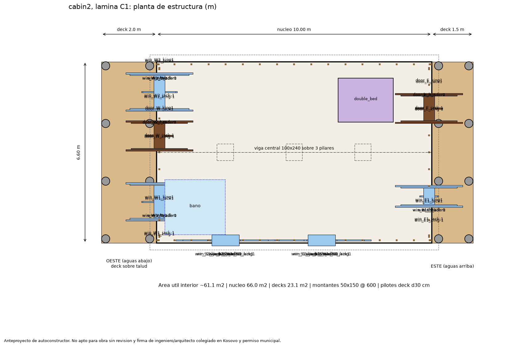
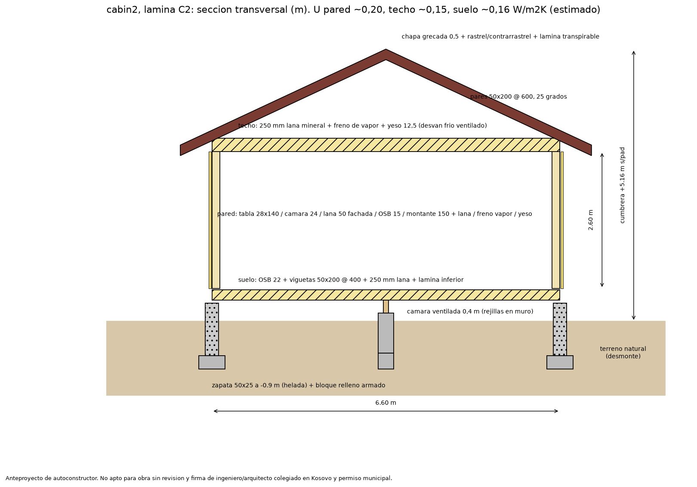
Chequeos estructurales (prediseno)
| role | type | section | want | supplier | status | span_m | sigma_MPa | fmd_MPa | defl_mm | defl_lim_mm | utilisation | result |
|---|---|---|---|---|---|---|---|---|---|---|---|---|
| floor_joist | joist_floor | 50x200 | 50x200 | sawmill_podujeve | ok | 3.3 | 6.0 | 14.8 | 4.2 | 11.0 | 0.41 | OK |
| mid_beam | beam_main | 100x240 | 100x240 | sawmill_podujeve | ok | 2.5 | 9.9 | 15.4 | 3.2 | 8.3 | 0.64 | OK |
| ceiling_joist | ceiling_tie | 50x200 | 50x200 | sawmill_podujeve | ok | 6.6 | 8.3 | 14.8 | 24.3 | 26.4 | 0.92 | OK |
| rafter | rafter_roof | 50x200 | 50x200 | sawmill_podujeve | ok | 3.64 | 7.0 | 14.8 | 6.0 | 14.6 | 0.47 | OK |
Tipo de edificio: cabin_base.
Secuencia de obra
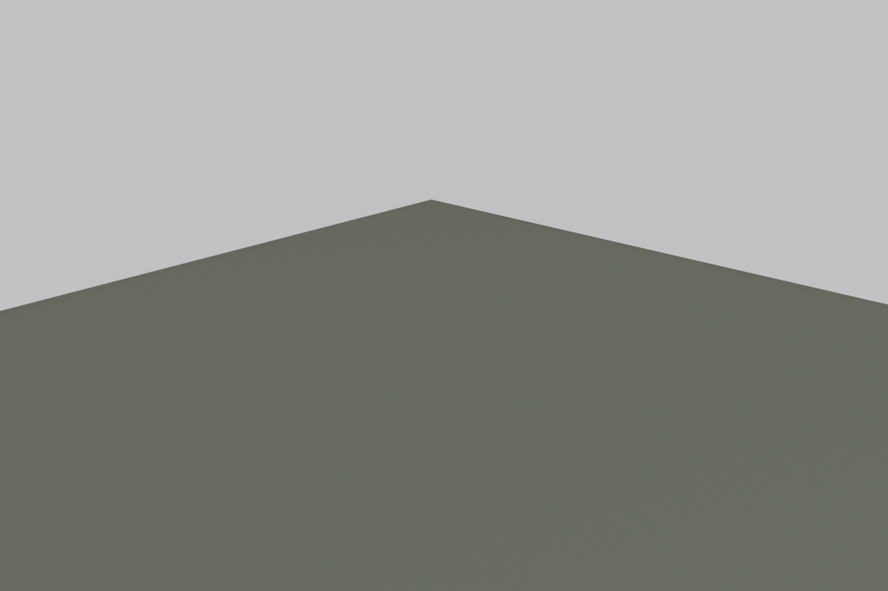
1. Replanteo y excavacion: Replanteo con cuerda y niveles, zanja perimetral a cota de helada, pozos de pilares.
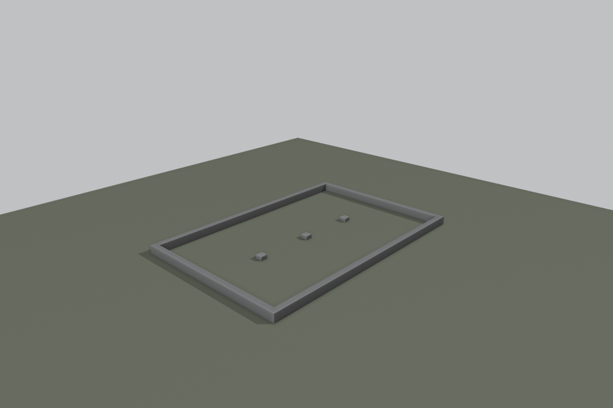
2. Cimentacion: Zapata corrida armada, muro de bloque relleno con barras verticales, pilares interiores, pernos de anclaje.
3. Pilotes de deck: Pilotes perforados a barrena sobre el talud, armadura y herraje base de poste.
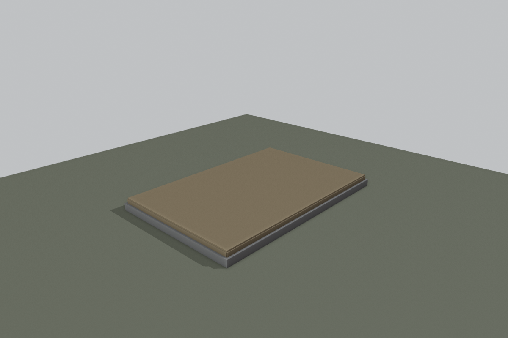
4. Forjado de suelo: Barrera capilar, durmiente, viga central, viguetas, aislamiento 250 mm, tablero OSB 22.
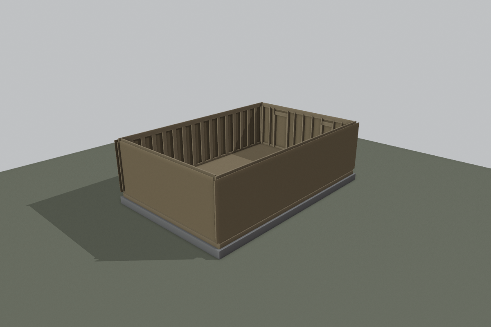
5. Paredes: Entramado 50x150 @ 600 armado en el suelo y levantado por paneles, OSB 15 exterior, arriostrado.
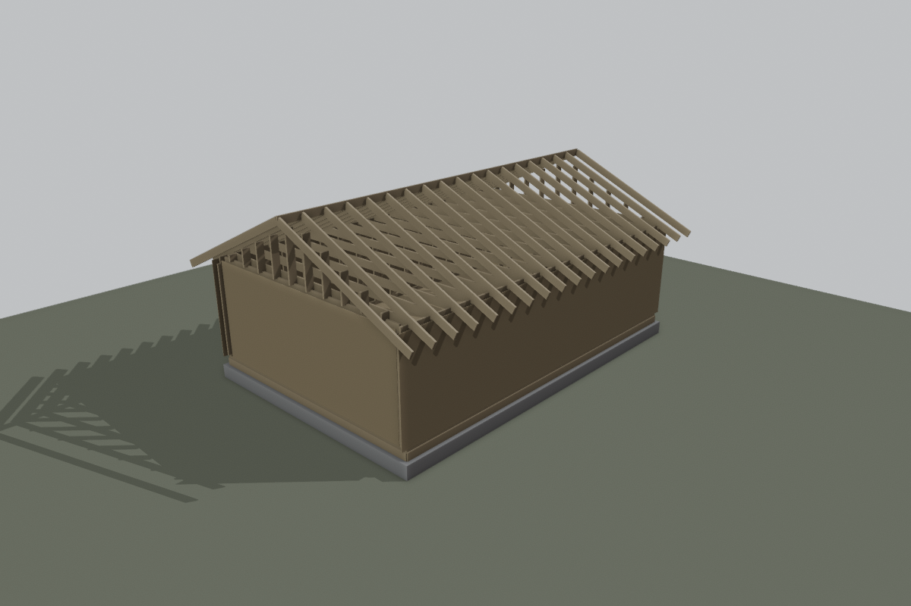
6. Estructura de cubierta: Viguetas de techo (tirantes), cumbrera, pares, piñones, flejes antiviento.
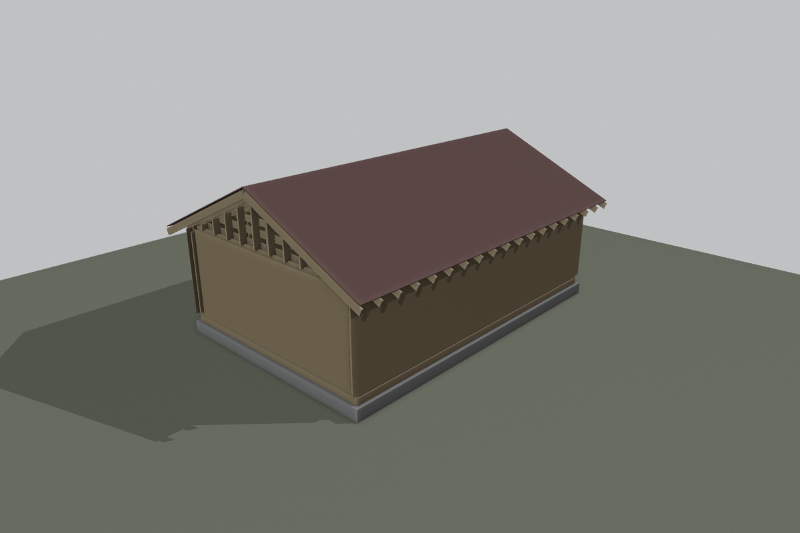
7. Cubierta: Lamina transpirable, rastreles y contrarrastreles, chapa grecada, remates.
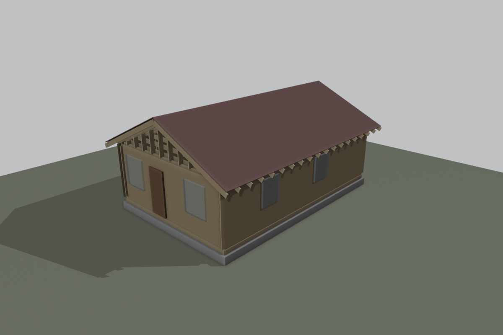
8. Carpinterias: Ventanas PVC y puertas con cinta de estanqueidad y espuma, vierteaguas.
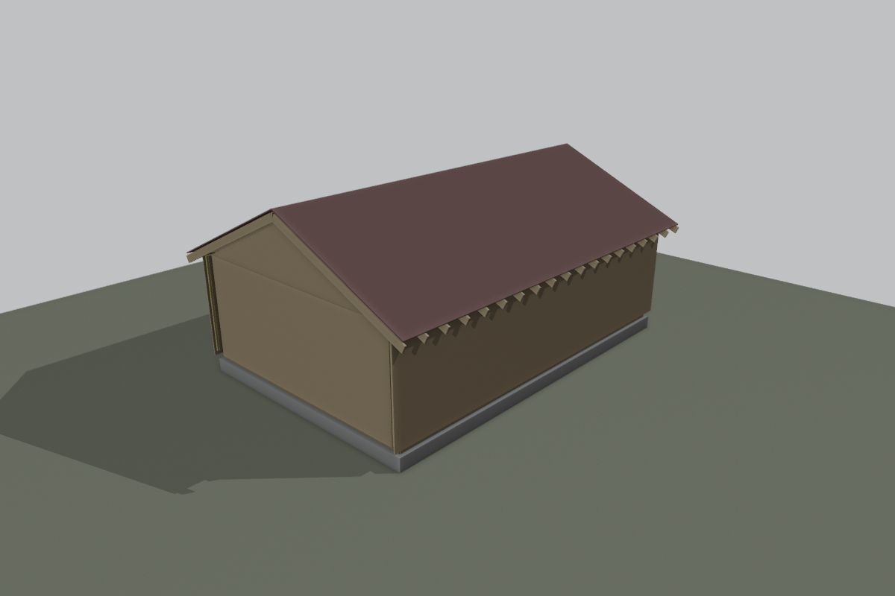
9. Fachada: Aislamiento exterior 50 mm, lamina transpirable, rastrel 24x48 (camara ventilada), tabla vertical 28x140.
10. Interior: Lana mineral 150 en paredes, 250 en techo, freno de vapor continuo y cinta, placa de yeso.
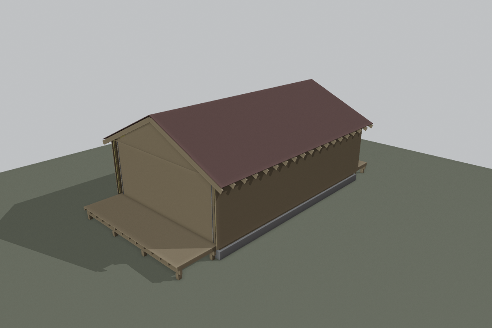
11. Decks: Postes 150x150, vigas dobles 50x200, viguetas 50x150 @ 500, tarima 28x140. Independientes de la casa.